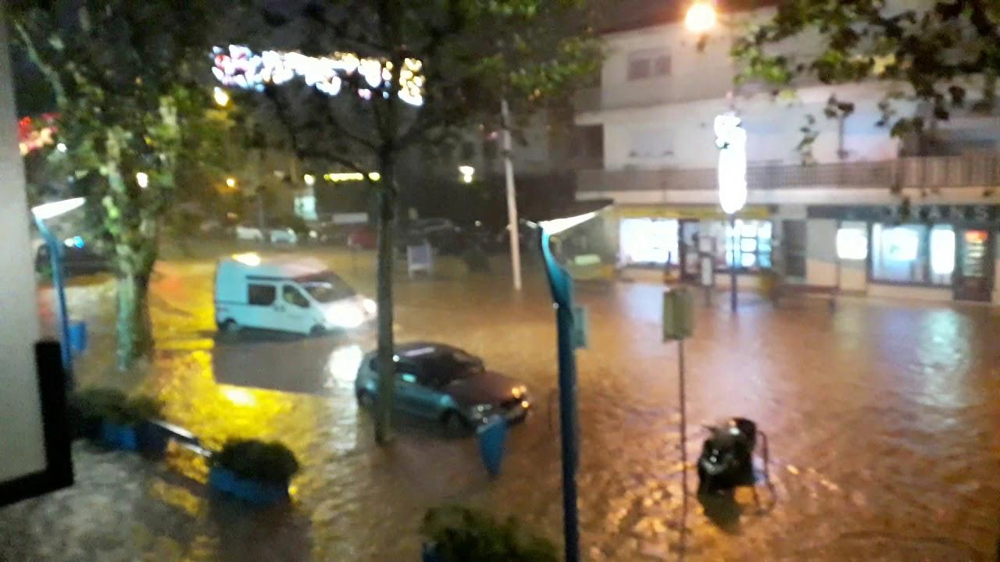
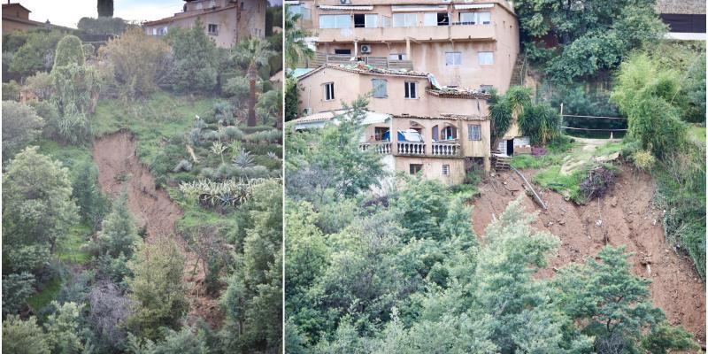
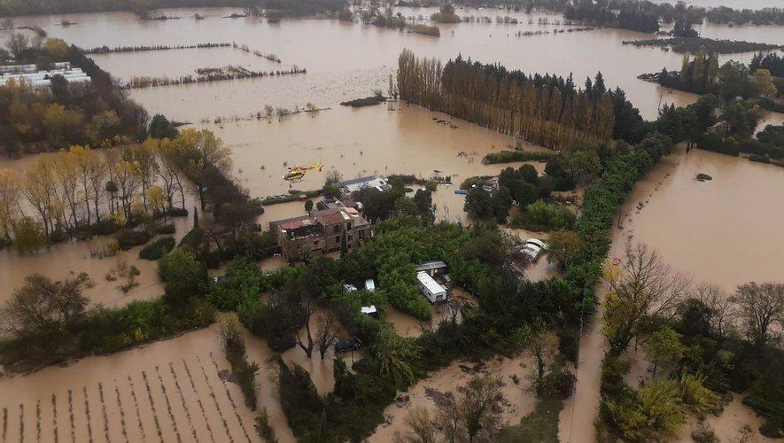
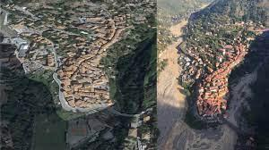
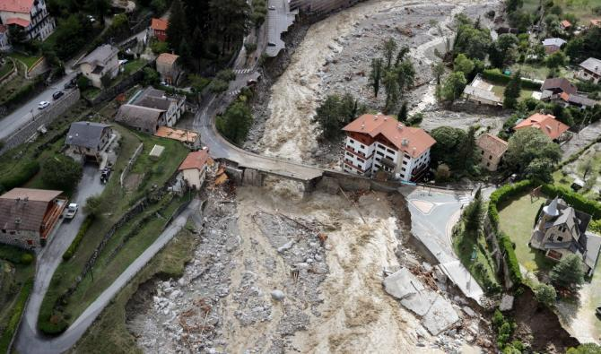
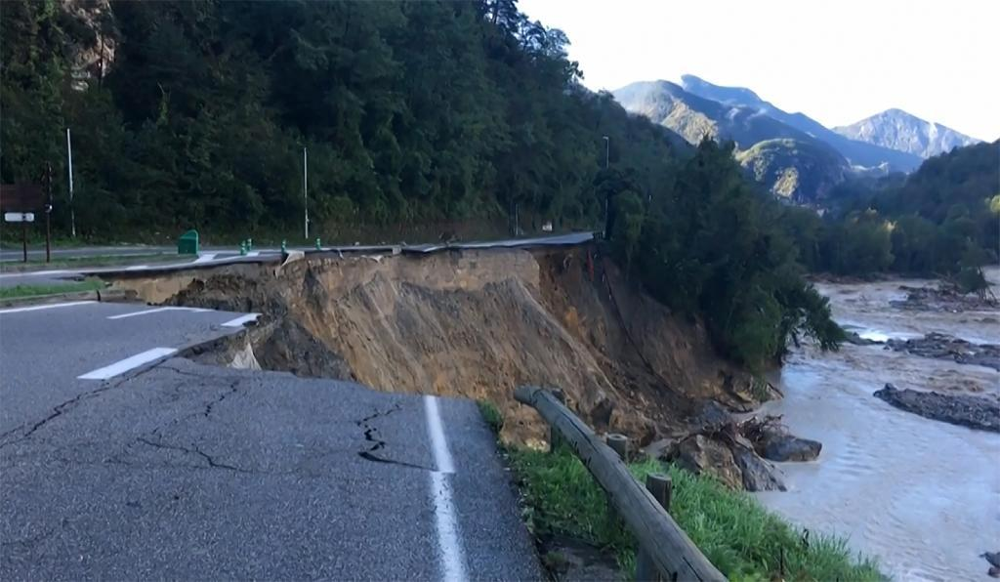

Bienvenue sur notre site dédié à la gestion des risques naturels et technologiques. Nous sommes convaincus que la préparation et la gestion des risques sont essentielles pour protéger l'environnement et les communautés humaines. C'est pourquoi nous avons créé ce site pour vous fournir des informations et des ressources pour mieux comprendre les risques naturels et technologiques, les mesures de prévention et de gestion des risques, ainsi que les initiatives pour encourager la population à devenir des leaders dans la réduction des risques. Explorez notre site pour découvrir comment vous pouvez contribuer à améliorer la sécurité et la résilience de votre communauté.
Un risque naturel est un événement qui résulte d'un processus naturel et qui peut avoir des conséquences
négatives pour l'environnement et les communautés humaines. Les risques naturels comprennent les inondations, les
tremblements de terre, les glissements de terrain, les feux de forêt, les tempêtes, les éruptions volcaniques.

La gestion des risques étant essentielle pour protéger les écosystèmes et les communautés humaines. À
Mandelieu-la-Napoule, des mesures ont été mises en place pour réduire les risques d'inondation, telle que la
construction de barrages et de canaux pour réguler le débit de l'eau. Des systèmes d'alerte précoce ont également
été mis en place pour permettre une évacuation rapide en cas d'inondation imminente. Il est important de souligner
que la gestion des risques ne se limite pas à la prévention des risques, mais aussi à la préparation et à la
réponse en cas de catastrophe. Les plans d'urgence doivent être régulièrement mis à jour et les communautés
doivent être formées à la gestion des risques pour minimiser les pertes humaines et matérielles en cas de
catastrophe.
La vulnérabilité peut être définie comme la propension d'un système à subir des dommages en cas d'événement
potentiellement dangereux, en raison de sa sensibilité aux impacts ou de sa capacité à y faire face. D'autre part,
la résilience est la facultée d'un système à absorber des perturbations, à s'adapter et à se rétablir rapidement
de ces perturbations.
En ce qui concerne Mandelieu-la-Napoule, la vulnérabilité de la ville aux inondations a été exacerbée par des
facteurs tels que l'urbanisation rapide, la densité de la population et l'absence de mesures de prévention
adéquates. De plus, la ville est située dans une zone à risque élevé d'inondation, ce qui la rend particulièrement
vulnérable aux événements climatiques extrêmes tels que les pluies torrentielles. La résilience de la ville face à
ces événements dépend de sa capacité à mettre en place des mesures de prévention et d'adaptation adéquates, ainsi
que de sa capacité à se rétablir rapidement de ces perturbations. Les conséquences possibles de l'inondation à
Mandelieu-la-Napoule sont donc très graves pour les écosystèmes et les communautés humaines. Les inondations
peuvent détruire les habitations et les infrastructures, causer des pertes en vies humaines, polluer l'eau et les
sols, affecter la biodiversité locale et modifier les écosystèmes.
Les répercussions peuvent également être économiques, comme la perte de revenus pour les entreprises locales, les
coûts de nettoyage et de reconstruction et les pertes de biens. Pour les communautés humaines, les inondations
peuvent causer des traumatismes psychologiques, des pertes d'emplois et des perturbations dans la vie quotidienne.
La gestion des risques est donc essentielle pour minimiser les conséquences potentiellement désastreuses des
inondations sur les écosystèmes et les communautés humaines.
Pour identifier les besoins et caractéristiques d'un territoire et analyser ses risques, il est important de
mener une étude approfondie en utilisant divers outils et méthodologies. Pour la zone de Mandelieu-la-Napoule,
cela peut inclure :
• Étudier l'historique des événements passés : en examinant les événements passés tels que les inondations, on
peut comprendre les facteurs de risque, les zones les plus touchées et les mesures prises pour y faire face.
• Évaluer les conditions géographiques : les caractéristiques du terrain comme les pentes, les cours d'eau, la
topographie et les sols ont une grande influence sur les risques de catastrophes naturelles. Une évaluation
minutieuse peut aider à identifier les zones les plus vulnérables.
• Évaluer l'infrastructure et l'utilisation des terres : il est important d'évaluer l'utilisation des terres et
l'infrastructure existante comme les bâtiments, les ponts et les routes. Cela peut aider à identifier les risques
de dommages matériels et humains en cas de catastrophe.
• Évaluer les réseaux de communication : les systèmes de communication jouent un rôle crucial dans la gestion des
catastrophes naturelles et technologiques. Il est important d'évaluer leur efficacité et leur résilience pour
assurer une réponse rapide et efficace en cas de crise.

Mandelieu-la-Napoule est une ville côtière située dans le sud-est de la France. Elle est vulnérable aux risques
d'inondation en raison de sa position géographique et de la fréquence des précipitations intenses dans la région.

Les changements climatiques ont également un impact significatif sur les risques d'inondation dans la région. Les
précipitations plus fréquentes et plus intenses peuvent causer des inondations plus fréquentes et plus sévères, ce
qui peut avoir des conséquences désastreuses pour la ville et ses habitants. Pour faire face à cette situation, la
ville a mis en place des stratégies de prévention des risques d'inondation, notamment la construction de digues et
la mise en place de plans d'évacuation en cas d'urgence. De plus, des campagnes de sensibilisation ont été menées
pour informer les populations locales des risques et de l'importance de la préparation et de la gestion des
risques.
Pour se préparer aux risques naturels tels que les inondations à Mandelieu-la-Napoule, les habitants peuvent suivre les consignes de sécurité émises par les autorités locales, telles que l'évacuation préventive en cas de menace imminente. Ils peuvent également mettre en place des mesures de protection telles que l'installation de systèmes de drainage et de pompage pour minimiser les dégâts causés par les inondations. Les habitants peuvent également s'impliquer dans la gestion des risques en participant aux programmes de sensibilisation et de formation aux risques naturels organisés par les autorités locales. Après un désastre naturel tel que les inondations à Mandelieu-la-Napoule, les populations peuvent contribuer à la réduction des risques en aidant à la réhabilitation et à la reconstruction des infrastructures endommagées. Cela peut inclure la reconstruction des habitations et des routes, l'amélioration des systèmes de drainage et la restauration des zones naturelles pour renforcer la résilience des écosystèmes. De même, il est important de mettre en place des mesures de préparation pour réduire les conséquences des futurs événements naturels, telles que la création de plans d'urgence et l'installation de systèmes d'alerte précoce.
Un risque technologique, quant à lui, est un danger qui résulte de l'utilisation de technologies humaines et qui
peut causer des dommages à l'environnement et aux communautés humaines. Les risques technologiques comprennent les
accidents industriels, les pollutions, les catastrophes nucléaires, etc.

Dans le cas de la vallée de Roquebillière, le risque naturel est celui des glissements de terrain. La ville est
située dans les montagnes et est donc vulnérable aux glissements de terrain causés par les précipitations intenses
et la fonte des neiges. En 2020, la ville a été touchée par un glissement de terrain majeur qui a causé des pertes
humaines et matérielles importantes. Dans ce contexte, il est important de mettre en place des mesures de
prévention, telles que l'aménagement du territoire et la surveillance des zones à risque, mais aussi des mesures
de préparation et de réponse en cas de catastrophe. Cela inclut des plans d'urgence et des systèmes d'alerte
précoce pour permettre une évacuation rapide en cas de danger imminent. La gestion des risques est de ce fait
essentielle pour protéger les communautés et les écosystèmes de Roquebillière contre les risques naturels.
La vulnérabilité peut être définie comme la propension d'un système à subir des dommages en cas d'événement
potentiellement dangereux, en raison de sa sensibilité aux impacts ou de sa capacité à y faire face. D'autre part,
la résilience est la capacité d'un système à absorber des perturbations, à s'adapter et à se rétablir rapidement
de ces perturbations.
En ce qui concerne la vallée de Roquebillière, la vulnérabilité de la ville aux glissements de terrain a été
exacerbée par des facteurs tels que la topographie du terrain, les précipitations abondantes et l'utilisation de
l'amiante dans les bâtiments. De plus, la ville est située dans une région à risque élevé de glissements de
terrain, ce qui la rend particulièrement vulnérable aux événements géologiques. La résilience de la ville face à
ces événements dépend de son potentiel à mettre en place des mesures de prévention et de mitigation adéquates,
ainsi
que de sa capacité à se rétablir rapidement de ces perturbations.
Ceci dit, les conséquences et effets possibles des glissements de terrain sur les écosystèmes et les communautés
humaines sont très graves. Les glissements de terrain peuvent entraîner la destruction de l'habitat naturel et la
dégradation de la qualité de l'eau, ainsi que la perte de terres agricoles et forestières. Ils peuvent également
causer des pertes matérielles importantes, telles que la destruction de maisons et d'infrastructures, ainsi que
des pertes en vies humaines. Les glissements de terrain peuvent par ailleurs entraîner des conséquences
économiques
importantes, notamment en perturbant les activités économiques locales telles que l'agriculture, le tourisme ou
l'exploitation minière.

Roquebillière est une petite ville située dans les Alpes-Maritimes, dans le sud-est de la France. La ville est vulnérable aux risques de glissements de terrain en raison de sa topographie montagneuse et de la fréquence des précipitations intenses dans la région. Les changements climatiques ont également un impact significatif sur les risques de glissements de terrain dans la région. Les températures plus élevées peuvent entraîner une fonte plus rapide de la neige en hiver, ce qui peut causer des glissements de terrain au printemps et en été. Pour faire face à cette situation, la ville a mis en place des stratégies de prévention des risques de glissements de terrain, notamment la construction de murs de soutènement et la mise en place de plans d'évacuation en cas d'urgence. De plus, des campagnes de sensibilisation ont été menées pour informer les populations locales des risques et de l'importance de la préparation et de la gestion des risques.
Après un événement naturel tel qu'un glissement de terrain à Roquebillière, les communautés peuvent prendre des
mesures pour réduire les risques futurs. En aidant à la réhabilitation et à la reconstruction des infrastructures
endommagées, les populations peuvent renforcer la résilience des écosystèmes et des communautés. Les efforts de
reconstruction peuvent inclure la remise en état des bâtiments et des routes, l'amélioration des systèmes de
drainage et la restauration des zones naturelles. En outre, la préparation aux événements futurs peut être
renforcée par l'adoption de plans d'urgence et l'installation de systèmes d'alerte précoce. Les communautés
peuvent également être sensibilisées aux risques naturels grâce à des campagnes de sensibilisation et de formation
organisées par les autorités locales, ce qui peut contribuer à la réduction des risques pour les écosystèmes et
les communautés humaines.

La préservation de l'environnement est une priorité pour garantir un avenir durable pour les générations futures. Nous devons prendre des mesures pour protéger les écosystèmes et minimiser notre impact sur la nature. De même, la gestion des risques naturels et technologiques est essentielle pour protéger les communautés et les infrastructures contre les aléas naturels et les accidents technologiques. Les événements tragiques tels que les catastrophes naturelles et les accidents industriels rappellent l'importance de la préparation et de la réduction des risques pour minimiser les conséquences pour les populations et l'environnement. Nous devons travailler ensemble pour mettre en place des mesures efficaces de prévention, de préparation et de réponse aux risques pour réduire les impacts des catastrophes naturelles et des accidents technologiques. En somme, la préservation de l'environnement et la gestion des risques sont des enjeux cruciaux pour assurer un avenir durable pour les communautés et les écosystèmes.